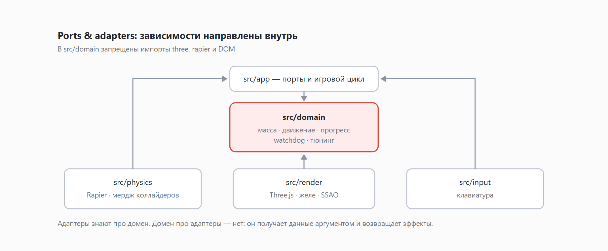

Я написал игру так, что её правила не знают про Three.js. Объясняю зачем
Игры редко пишут по чистой архитектуре, и на то есть причины: обычно игровой объект сам держит меш, сам дёргает физическое тело и сам решает правила. Так быстрее, и в геймдеве это норма, а не грех.
Я в своём браузерном платформере поступил иначе: правила игры не знают ни про Three.js, ни про Rapier, ни про DOM. Ниже - во что это обошлось, и что дало взамен.
Спойлер: главное, что дало, - тесты, которые проходят за секунды и не зависят от того, насколько медленно на конкретной машине рисуется кадр.


Одно правило, на котором всё держится
Оно жёсткое и без исключений: в src/domain/** запрещены импорты three, rapier, DOM API и любых адаптеров. Только стандартный TypeScript.
Дальше всё вытекает само. Домен не может «просто позвать движок» - значит, всё нужное ему приходит аргументом, а всё, что он хочет сделать с миром, он возвращает как данные.
Правила прогресса - чистые функции вида «событие → новое состояние + эффекты». Функция onEntityEnter не удаляет меш и не трогает коллайдер. Она возвращает новый прогресс и список эффектов, которые исполнит кто-то другой.
Порты
Между доменом и внешним миром - интерфейсы. Их немного, и весь контракт игры с физикой влезает в один экран:
export interface PhysicsPort {
loadLevel(level: LevelDef): void;
setMoveIntent(x: number, z: number): void;
requestJump(): void;
step(dt: number): void;
getCubeState(): CubeState;
consumeEvents(): PhysicsEvent[];
setCubeMass(mass: number): void;
removeEntity(index: number): void;
spawnShedDrop(id: number, position: Vec3): void;
removeShedDrop(id: number): void;
applyKnockback(): void;
respawnCube(): void;
}
export interface RenderPort {
syncLevel(level: LevelDef): void;
syncCube(cube: CubeState): void;
removeEntity(index: number): void;
syncShedDrops(drops: ReadonlyArray<ShedDropState>): void;
render(): void;
}Обратите внимание на то, чего в PhysicsPort нет. Нет RigidBody, нет Collider, нет ни одного типа из Rapier. Есть LevelDef, CubeState, Vec3 - мои собственные структуры. Реализация RapierPhysics знает про Rapier; всё, что выше неё, - нет, и это принципиально.
С рендером то же самое: syncCube(cube: CubeState) означает «вот состояние куба, показывай как хочешь». Адаптер на Three.js внутри творит что угодно, включая squash & stretch и пересчёт материала. Наружу это не протекает.
Теперь честно про цену
Порт разрастается. Двенадцать методов в PhysicsPort - это уже не тот изящный интерфейс из книжки. Каждая новая механика, которой что-то нужно от физики, добавляет метод. Красиво не будет.
Один раз пришлось продавить домен. Рендеру для squash & stretch нужна скорость куба. Скорость живёт в физике, а рендер её оттуда достать не может - он видит только CubeState. Пришлось добавить в доменную модель поле velocity, которое самому домену не нужно ни для одного правила.
Это честный компромисс, а не победа архитектуры. Данные поехали через центр ровно потому, что маршрута в обход не нашлось. Такие места лучше называть своими именами, чем задним числом объяснять, что так и задумывалось.
Тюнинг живёт в одном месте. Все константы игры - в src/domain/tuning.ts, и магические числа в адаптерах запрещены. Дисциплина полезная, но к ней надо привыкнуть, а привыкать не всегда хочется.
Что это дало: тесты без браузера
Правила массы, движения, прогресса и watchdog - чистые функции без зависимостей. Гоняются в Vitest пачками: без headless-браузера, без WASM-модуля физики, без канваса. Быстро, и, что важнее, это тесты на правила игры, а не на пиксели.
Физика тестируется отдельно, а Game - с фейковой реализацией портов. Чтобы проверить, что подобранная капля увеличивает массу, Rapier не нужен: достаточно фейка, который вернёт нужное событие.
И главное - детерминированные e2e
Вот здесь всё окупилось разом.
Сначала про цикл. Игра крутится на фиксированном шаге с аккумулятором:
export class FixedTimestep {
private accumulator = 0;
constructor(
private readonly dt: number,
private readonly maxStepsPerFrame = 5,
) {}
advance(elapsedSec: number, stepFn: () => void): void {
this.accumulator += elapsedSec;
let steps = 0;
while (this.accumulator >= this.dt && steps < this.maxStepsPerFrame) {
stepFn();
this.accumulator -= this.dt;
steps++;
}
if (steps === this.maxStepsPerFrame) this.accumulator = 0;
}
}maxStepsPerFrame тут не для красоты - это защита от спирали смерти. Кадр отрисовался медленно, накопилось игровое время, движок пытается догнать, следующий кадр от этого ещё медленнее, и так до полной остановки вкладки. Упёрлись в лимит - сбрасываем накопитель и осознанно теряем игровое время. Лучше потерять полсекунды симуляции, чем весь браузер.
Теперь проблема тестов. Playwright-тест «дойди до капли, проверь, что масса выросла» в наивном виде выглядит как «нажми стрелку, подожди секунду, проверь». На моей машине хватает. На софтверном рендере в CI - нет, и тест начинает мигать. Ждать по настенным часам нельзя в принципе, потому что симуляция едет со скоростью отрисовки.
Но раз симуляция отделена от рендера, её можно прокрутить синхронно:
if (import.meta.env.DEV) {
(window as unknown as Record<string, unknown>).__cubanoid = {
getState: () => game.getCubeState(),
getProgress: () => game.getProgress(),
advance: (seconds: number) => {
const step = 1 / 60;
for (let t = 0; t < seconds; t += step) game.tick(step);
},
};
}И тест перестаёт зависеть от железа:
for (let i = 0; i < 40 && c.getProgress().mass !== 5; i++) c.advance(0.1);Это не «подожди четыре секунды». Это «прокрути ровно четыре секунды игрового времени шагами по 1/60». Результат одинаковый на моей машине, на софтверном рендере и на чужом ноутбуке.
Хук объявлен под import.meta.env.DEV и в продакшен-сборку не попадает.
Бонус: рендер тоже в курсе, что его тестируют
Полный пайплайн с SSAO и bloom на софтверном GL умирает мучительно, поэтому режим качества выбирается сам:
if (requested === 'high' || requested === 'low') {
quality = requested;
} else if (
(typeof navigator !== 'undefined' && navigator.webdriver === true) ||
MOBILE_UA_PATTERN.test(navigator.userAgent)
) {
quality = 'low';
} else {
quality = 'high';
}navigator.webdriver === true - это и есть «нас запустил Playwright». Функциональные e2e идут на low и не тормозят; скриншот для сверки с визуальным референсом снимается отдельно с ?quality=high.
Важно, что решение рендер-локальное: домен, физика и тюнинг про режим качества не знают ничего. Ровно так, как и задумано.
Стоило ли
Для игры, где уровень проходится за полторы минуты, - вопрос спорный, и я не стану утверждать, что так надо делать всем. Но три вещи повторил бы не думая:
- Правила игры как чистые функции. Их можно читать, тестировать и обсуждать, не запуская игру.
- Фиксированный шаг с ограничителем. Дёшево, десять строк, снимает целый класс проблем.
- Синхронная прокрутка симуляции для тестов. Возможна ровно потому, что симуляция не привязана к отрисовке. Именно она превратила мигающие e2e в стабильные, и одного этого хватило бы, чтобы оправдать всю затею.
Интересно услышать противоположный опыт: если вы писали игру «как принято», с объектами, которые знают всё сразу, - где это выстрелило в ногу и выстрелило ли вообще.